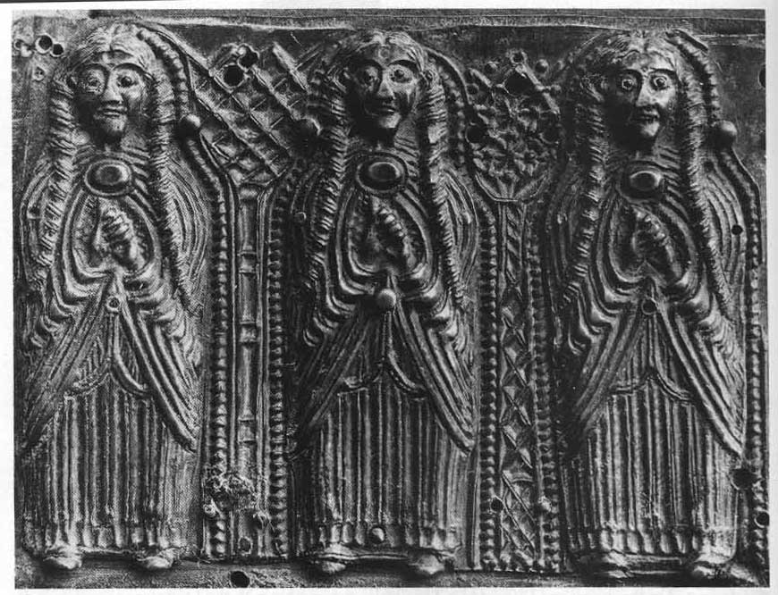
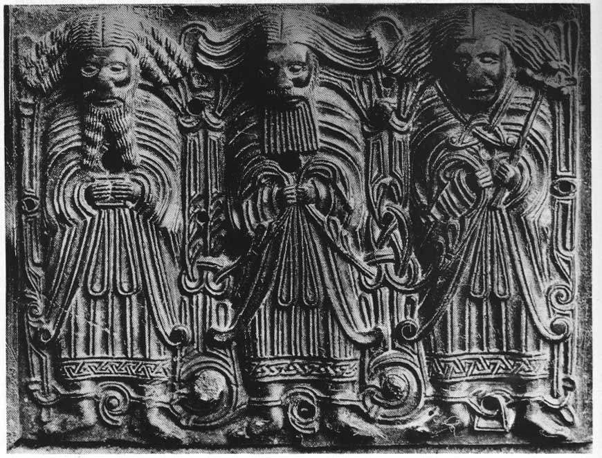
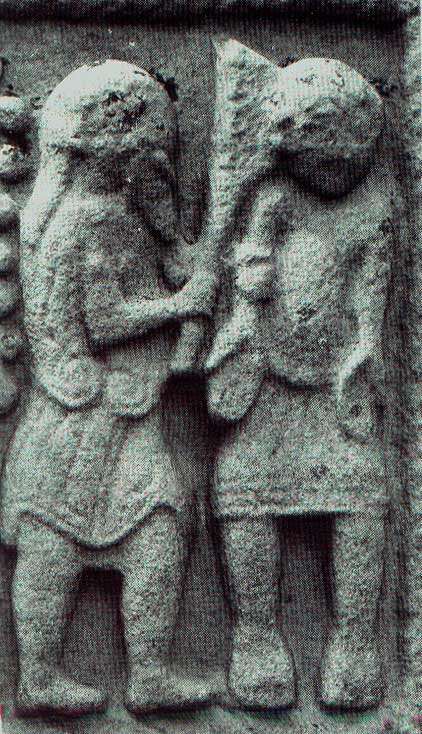
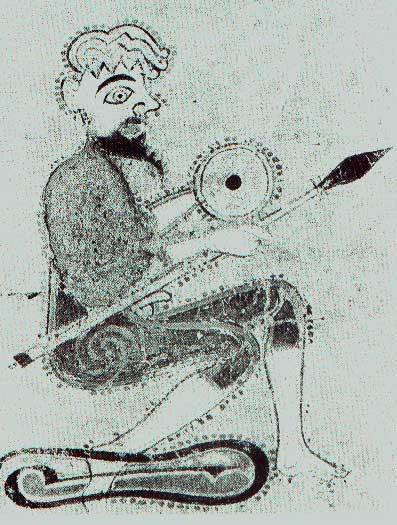
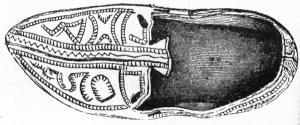

Ireland, ca. 5th-10th Centuries CE
- Home
- Hallstat and La Téne Celts
- Ireland, 5th - 10th c. AD
-- Hair, Jewelry, etc. (Classical Celts and pre-medieval Ireland) - Late Medieval Ireland
- Medieval Scotland, 1100-1600
- Scotland, 1600-1800
-- Assembling a Basic 18th c. Woman's Outfit - Dyes
- Fiber Working Techniques
- Celtic Costume Myths and Tips
- Patterns and Resources
- Bibliography
- Recommended Reading
- Other links
Tunic (léine)
The léine (pronounced /lay'-nuh/) in early Ireland in early depictions (between 5th and 12th century CE) is a long smock-like garment made of linen, not too widely cut, reaching to slightly above the ankles and decorated around the neck, wrists, and lower hem with embroidery. McClintock says it resembles a djelabbeh (Arabic garment). It might have sleeves or be sleeveless. The léine can be drawn up through the belt to knee-level (which causes it to bunch in such a way that carvings of men wearing their léines this way are sometimes mistaken for wearing a kilt). (H.F. McClintock, Old Irish Dress, p. 2) The léine may sometimes have opened in the front to the waist (see below), but most pictures show a neckline and don't indicate such an opening. The léine's neckline can be round, square, or v-shaped. Sometimes a léine is described by the term culpatach, meaning hooded; this could have meant that it had a collar (culpait) large enough to be used as a hood. (McClintock, Old Irish Dress, p. 13).
Both women and men wore the léine, but for women, it was a little longer. The full-length léine is nearly always shown being worn with a brat, not by itself, and is never shown worn with trews or the inar.
The léine can sometimes be shorter than ankle-length; a shorter léine, however, seems to be a mark of lower status, as the wearer probably is involved in physical labor. Some effort was made to assure that the léine wasn't too short. (Dunleavy, p 17)
Laborers or peasants are sometimes seen in what superficially appears to be a short kilt, which has some embroidery around the lower hem. However, this most likely represents a léine, with the upper part thrown off to allow for coolness and freedom of movement while working. This would indicate that the neck-line of the léine is big enough to allow the wearer to put his whole body through it, so that it hangs around the waist. One figure on the cross shows an opening big enough to do this. (Dunleavy, p. 4)
The léine as seen in the Book of Kells has a high neckline, too narrow for the wearer to throw off the top of the garment for work. Sleeves are narrow and close to the arm. The long, flowing sleeves of l�inte from the 16th century are a later development.
Decoration
The léine is usually described as being gel, or bright. This probably indicates light-colored linen. Some of the l�inte shown in the Book of Kells are of various colors, including light blue or green, which are obtainable with woad, with an under-dye of weld for the green. Linen doesn't take dye very well, and most colors applied would come out light, rather than the intense, dark colors we are able to achieve with modern chemical dyes; the exceptions are the pigments obtained from indigin (from woad) and murex purple. The Book of Kells seems to indicate embroidery or woven borders at the neck, wrists and hem. L�inte may also have been striped. The lines on the garments of the Breac Maedh�c figures (below) could be intended to represent deep pleats, or stripes, or both.
A good description of how to construct a similar tunic can be found at the following site of How to Make a Viking Tunic -- look at the Birka tunic with a round neckline and gores let into the side seams. I'll be posting pictures and instructions eventually. In the meantime, my information for The Rogart Shirt would probably be fairly accurate.
Women (left) and men (right) from the Breac Maedh�c, a bronze house-shrine from the 11th or 12th century:

.
Cloak (Brat)
The brat (pronounced /braht/) was a rectangular woolen cloak worn over the shoulders like a shawl and/or fastened with a brooch on the chest or the right shoulder. The brat seems most commonly to have been rectangular, and rather voluminous, so that it could be folded several times around the wearer, with longer length indicating greater status. Sometimes the brat is described as 'five-folded' (Gantz, p. 157), but we don't know exactly what this means. They are sometimes portrayed as having some sort of hood, or as being folded and/or pinned in such a way that part of the brat could be drawn up over the head as a hood.
Several other forms of the brat seem to have been used, though it's hard to tell from the pictorial evidence -- one form seems to have holes through which one can put one's arms without unfastening the cloak. Some are shown that look like modern capes -- a half-circle, with the bottom edge parallel to the ground, with or without a hood. (Dunleavy, p. 3) Both large and small mantles are portrayed. The shorter brats, however, are usually worn with trews. Women are usually portrayed wearing the full-length brat.
Decoration
Unlike linen, wool takes dye very well, and the brat is often described as being colored. Usually the brat is one color with a fringe (corrthar) or border of another color. These borders or fringes could have been either woven into the brat, as was common with fabric woven on a warp-weighted loom, or made separately, and could include silver and golden threads. It is possible that embellishments included appliqu� and tapestry-woven patterns. (McClintock, Old Irish Dress, P. 15) Bright colors were common, with purple, crimson and green being mentioned most often. Other colors listed are blue, black, yellow, speckled (which, from the Latin, can mean checked or tartan), gray, dun, variegated and striped. (McClintock, Old Irish Dress, p. 14) McClintock downplays the possibility of tartans being used, but scraps of checked cloth have been found from ancient Scotland and elsewhere in Europe, so a simple check is certainly not impossible.
The brat is also sometimes described as being 'fleecy': the woman who enters Da Derga's Hostel in the tale of that name is described as wearing a brat that was fleecy and striped. (Gantz, p. 76) Some brats from later periods have been found that had a pile woven into the fabric, so that they looked rather like a rug. It is also likely that the nap of the fabric was drawn out with teasels, so that the fabric was very fuzzy; this fiber could then be either left long or sheared short, so that it looked like modern woolen blankets. The depictions in the Book of Kells and other manuscripts, however, do not show mantles with obvious tufting.
No Kilts!
One of the myths making its way through the Celtic community is that the Irish used to wear a kilt. There is no evidence to support this. Several sculptures have been cited to support the existence of kilts; however, most authorities (including H.F. McClintock) on the subject say that the garments portrayed are l�inte, gathered around the waist (see both my comments above in the segment on l�inte, and Scottish Clothing, ca. 1100-1800 AD. The kilt arose in Scotland around 1600 C.E., when Scots started belting their brat around their waist. This was remarked on by observers, who said they could tell the Scots from the Irish soldiers in Ulster because of this habit of belting their cloaks.
Below: The disputed panel from the Cross of Muiredach

Jacket (Inar)
Soldiers are portrayed as wearing a close-fitting sleeved or sleeveless jacket, waist-length, fastened in the chest with a brooch. The jacket is worn with a pair of trews, not over a léine. The high waists of 16th c. jackets seem to be a later development. One soldier portrayed has sleeves to the middle of his forearm and trews that come to a few inches below the knee. Another has sleeves that come to his wrists. (Dunleavy, pp. 21, 22)
Trews (Br�c)
Trews in Ireland are usually shown on soldiers, who are wearing them with a short jacket. The trews are usually close-fitting, sometimes shown to end above the knees, sometimes to a few inches below the knee, and sometimes cover the whole leg. They are sometimes marked with vertical lines which may represent decoration or a striped weave in the cloth. An illustration in the Book of Kells shows a soldier wearing a fitted green jacket with close-fitting sleeves and a round neck, and bright blue trews. The trews end just above the ankle-bone and have a strap going under the foot, making them like modern stirrup pants. There is a line right under the knees that may represent a garter. (McClintock, Old Irish Dress, p. 5; Dunleavy, p. 21, 22) This is corroborated by an account of the arrival of Harald Gille, who later became king of Norway, who came to Norway from Ireland claiming to be a son of King Magnus Barefoot by an Irish mother. His clothes are described thus: "he had on a shirt and trousers which were bound with ribands under his foot-soles, a short cloak, an Irish hat on his head and a spear hat under his hand." (McClintock, Old Irish Dress, p. 5)
Other forms of trews: on the Cross of Muiredach (10th c.), soldiers are shown wearing what appear to be striped trews that are rather short -- they only reach to mid-thigh at most. (Dunleavy, p. 21)
Soldier from the Book of Kells, ca. 800 CE (jacket is green, trews blue):

Persons who would have worn trews would have included charioteers, the king's bodyguard, food bearers, door keepers, and scouts. Kings and other notable persons are usually shown wearing the long léine.
Belt (Crios)
The crios usually refers to a leather or woven belt. These are probably either tabby weave (as is the criosana still woven in Aran today), or tablet-woven. It was woven not only to keep the léine in place but to carry object and utensils in the usual medieval fashion.
Shoes:
Contrary to popular opinion, going shoeless is not a universal Celtic trait. The Rule of Ailbe of Emly directed that "no matter how ascetic a person became he should never go barefoot." (Dunleavy, p. 20)

See Diarmuit Ui Dhuinn's Footwear of the Middle Ages site for information on Irish shoes for this period.
Colors of Clothing:
Brehon law laid out the colors of the clothing that people were allowed to wear -- see my Textile Page.
Also see:
Eachna's Celtic Clothing
Social History of Ancient Ireland (excerpts from P. W. Joyce) -- use with caution. His information on the spurious Irish 'kilt' has been thoroughly refuted.
Molly ni Dana's Home Page - another essay on Irish clothing, and an essay on shoes.